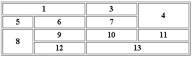
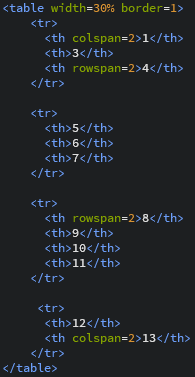

Добавление таблиц
Таблицы - в определённых ситуациях строения и оформления сайта необходимы таблицы, так как с помощью них имеется возможность преображиния вида самой страницы, ну или же в том случае когда просто нужна какая-либо таблица.
По данной таблице  разсмотрим из чего она состоит. 
table - добавление табличной библиотеки.
tr - строка таблицы.
th - столбец таблицы.
td - ячейка таблицы.
rowspan=значение - обьеденить ячейки по вертикали,а в значение вносится число ячеек.
colspan=значение - обьеденить ячейки по горизонтали, в значении- число ячеек.
bgcolor=код цвета - значение для изменения цвета ячейки или таблицы в целом.